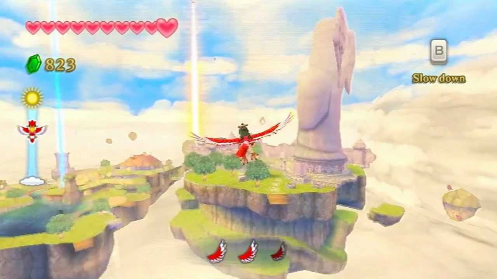
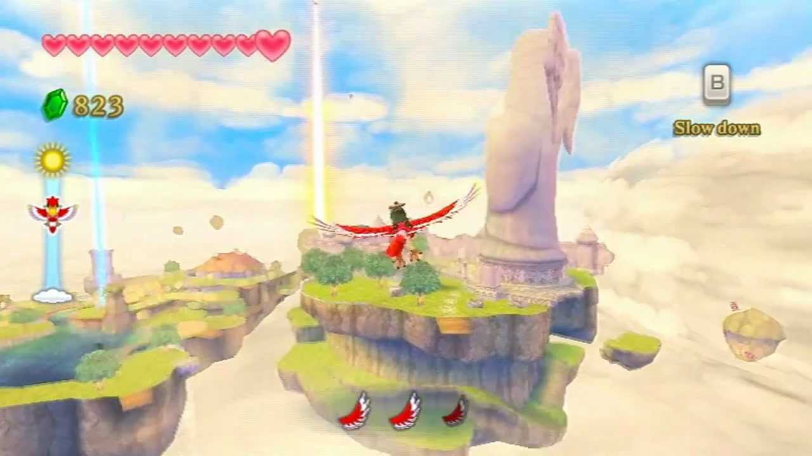

Legend of Zelda: Skyward Sword
Publishing Info
- Published by: Nintendo of America Inc.
- Developed by: Nintendo EAD
- Release date: November 20, 2011
Description
The Legend of Zelda: Skyward Sword once again places the player in control of Link, a Hylian boy who this time around lives in the floating nation of Skyloft.
When a mysterious storm results in the disappearance of his love interest, Zelda, Link embarks to the surface world below Skyloft.
Equipped with a sword and various other tools he finds along the way, Link must solve puzzles, explore dungeons, and fight dangerous foes in his search for Zelda.
- Genre: Action
- Perspective: 1st-person, Behind view
- Visual: Free-roaming camera
- Gameplay: Metroidvania, Puzzle elements
- Interface: Direct and Motion control
Gallery

 


Quote
A recommendation for Skyward Sword is quite easy, if you are a fan of the franchise, you'll love it.
If you stopped playing because the series started feeling stale, you'll love it and if you are just looking for an awesome adventure, you'll definitely love this.
--User Asinine on MobyGames